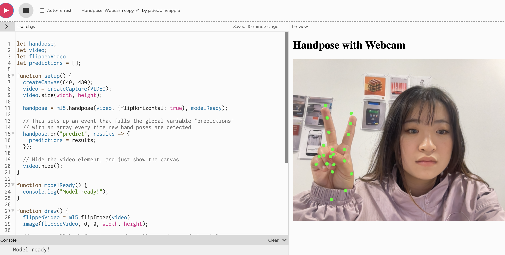
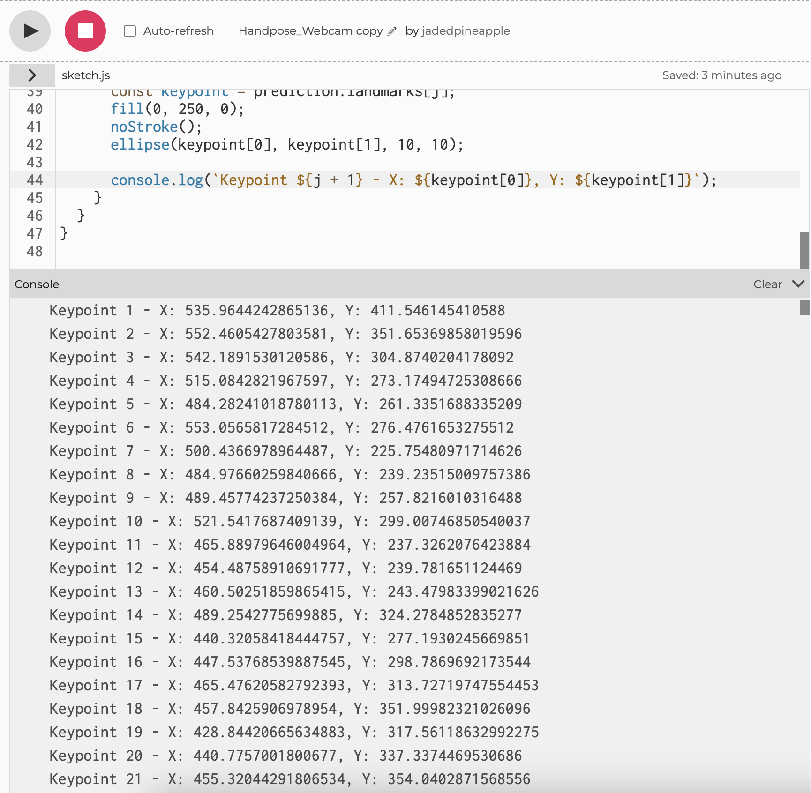
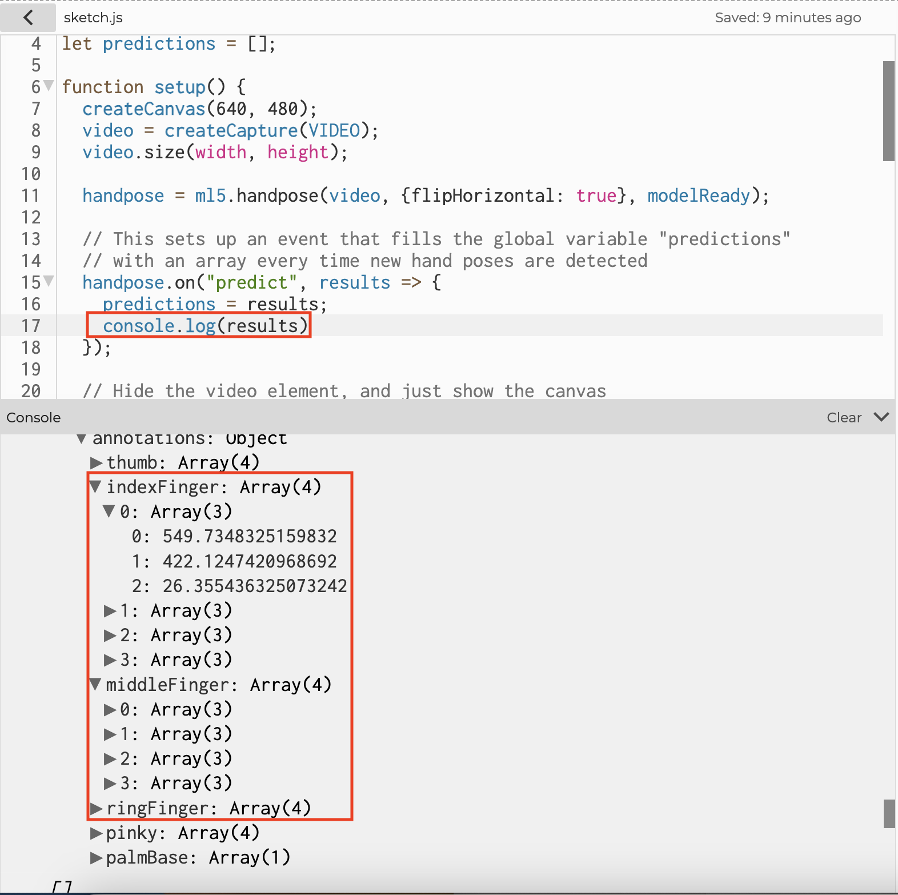

For this interface, I'm thinking about making a dice throwing device that's realized by Hand Pose in ml5js.
First, we need to flip the video also try to match drawn points to the image.
Second, we need to figure out if we can recognize gestures. After brief research, this is often achieved by TensorFlow. The premeter of this assignment is p5.js and ml5.js. However, this should be maneuvered by training the machine to know specific hand gestures based on the position of the points. As we can see, there's always 21 points registered for one hand. We can also check out each finger's data through annotation -> finger, marked in second picture.
 Now, as we've found out the data we want the machine to learn and modify, I went ahead and followed this video tutorial instructions: